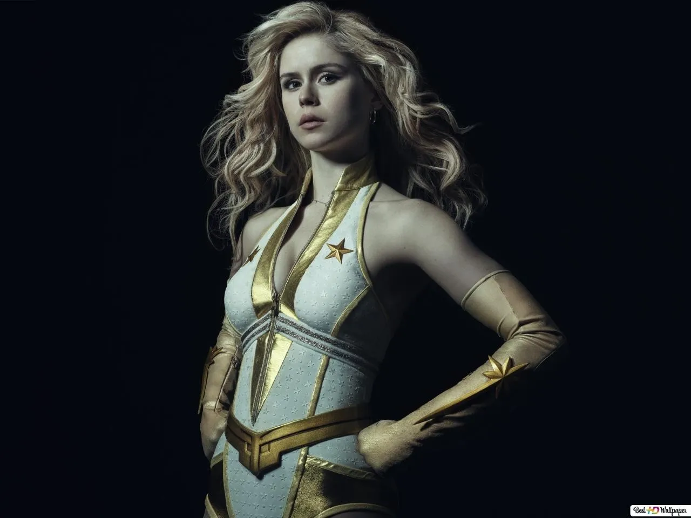

Starlight
Erin Moriarty como Annie January / Starlight, una joven superheroína que posee la habilidad de emitir rayos de luz a través de sus manos y la miembro más reciente en entrar a los Siete. También es una de las pocas personas con superpoderes que son sinceras en ayudar a las personas inocentes, además de ello Starlight también cuestiona su lealtad a los Siete después de que se entera de su verdadero carácter y se convierte en una doble agente de The Boys, en particular de Hughie, con quien forma una conexión amorosa.